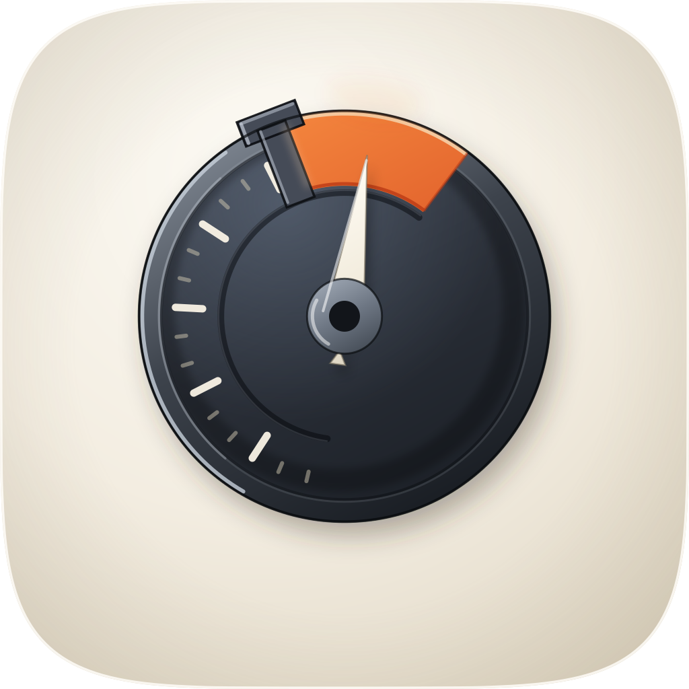

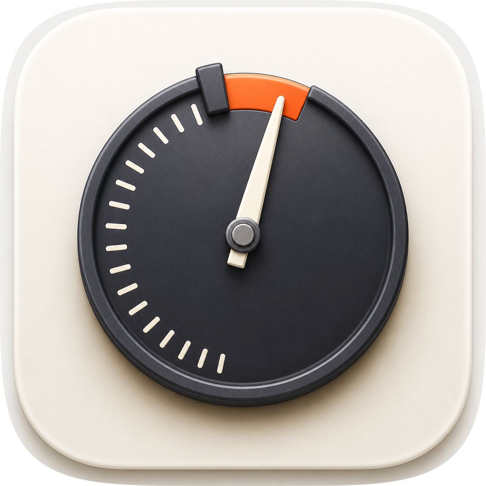
better-goal keeps the dial and the target band, and better-loop was rebuilt away from that device the day before so this one could keep it. So every take below is the same instrument at a different value relation, and the shipping one takes the family's own answer — a dark object on porcelain rather than a pale one.

| Take | Hero at 1024, then renders at 128 / 64 / 48 / 32 / 16 css px (2× retina sources), plus the 16px squint magnified | Rubric | Verdict |
|---|---|---|---|
a1 · icon.svghand-authored layered SVG, from build_icon.py --variant a1 — SHIPS |
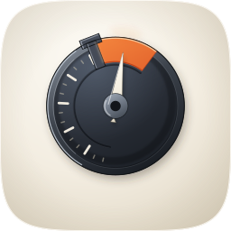 |
11 / 12 | The held needle. A machined graphite dial on porcelain: cream graduations run from the foot of the travel clockwise up the left flank and stop where a vermilion target band is cut through the face and out to the rim; a porcelain needle stands inside the band; a graphite pawl straddles the band's counter-clockwise end and stands proud of the bezel. Passing 1–4 on the renders: full-bleed 1024 on the family superellipse with corner alpha 0 at all four extremes and no baked shadow (#1); 60.0% of tile width on symmetric 205px side margins, lifted 42px for the down-right shadow (#2); nameable filled black, and not a plain circle, because the pawl breaks the rim (#3); at 16px the disc, the warm crown and the needle all survive, verified on the magnified 32px source (#4). The measurement the commission turned on: the graphite face reads 12.34:1 against the tile beside it, against 1.05:1 for the icon it replaces. One key at 118° with every face gradient on one user-space axis (#5); two hue families and one vermilion accent at 2.52% of the tile in one contiguous place (#6); ordered planes and one shadow direction (#8); cushion tile, satin extrusion, real contact shadow, no hard speculars (#9); a nameable device beyond glyph-on-gradient (#11); no text (#12). Deducted at #10: the four named layers are there and fidelity.py structure passes, but Dark, Clear and Tinted have not been rendered, so variant robustness is constructed rather than verified — and an unverified check is not a passing one. |
| a2 · icon-takeA2-latched-bezel.svghand-authored layered SVG — the pale-face value relation | 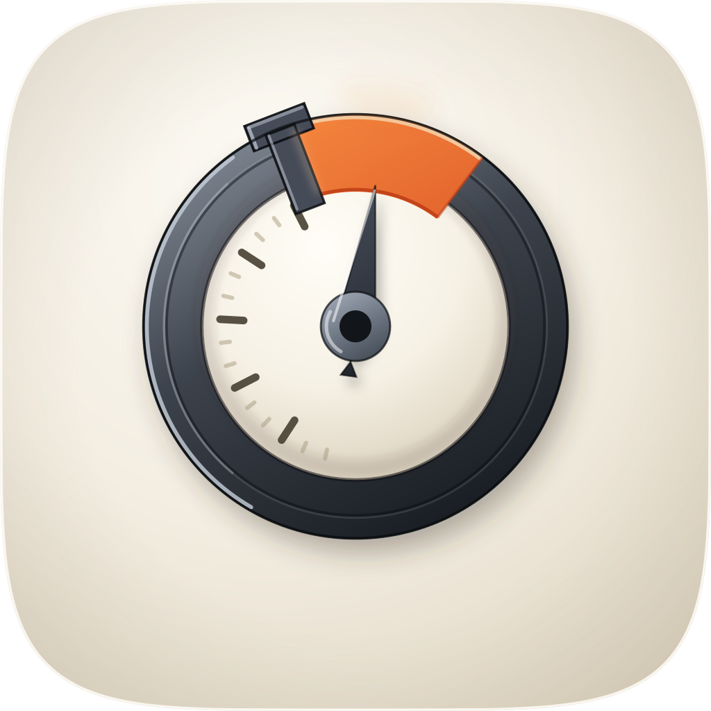 |
8 / 12 | The latched bezel — a graphite bezel ring around a porcelain face, the other half of the value sweep. It lost on a measurement, which is the useful part: the pale face reads 1.00:1 against the tile, so the predecessor's exact defect survives inside the ring and only the ring is doing any work (#7). #4 follows — at 16px it is a dark annulus with a pale centre and the needle is gone into the face, and its 16px RMS is 0.2166 against a1's 0.2929, the lowest of the three hand-authored takes. #11 fails because a graphite bezel around a pale face with a needle is a wall clock: the object names a category, not this subject, and at 16px it sits in mac-doctor's and be-my-witness's neighbourhood rather than its own. #10 deducted as unverified, as for every layered take here. Kept in because it settles the brief's open question — a graphite bezel around a pale face was one of the two relations worth sweeping, and it is the worse one. |
| a3 · icon-takeA3-sunk-dial.svghand-authored layered SVG — tile-as-machine, edge-bleed | 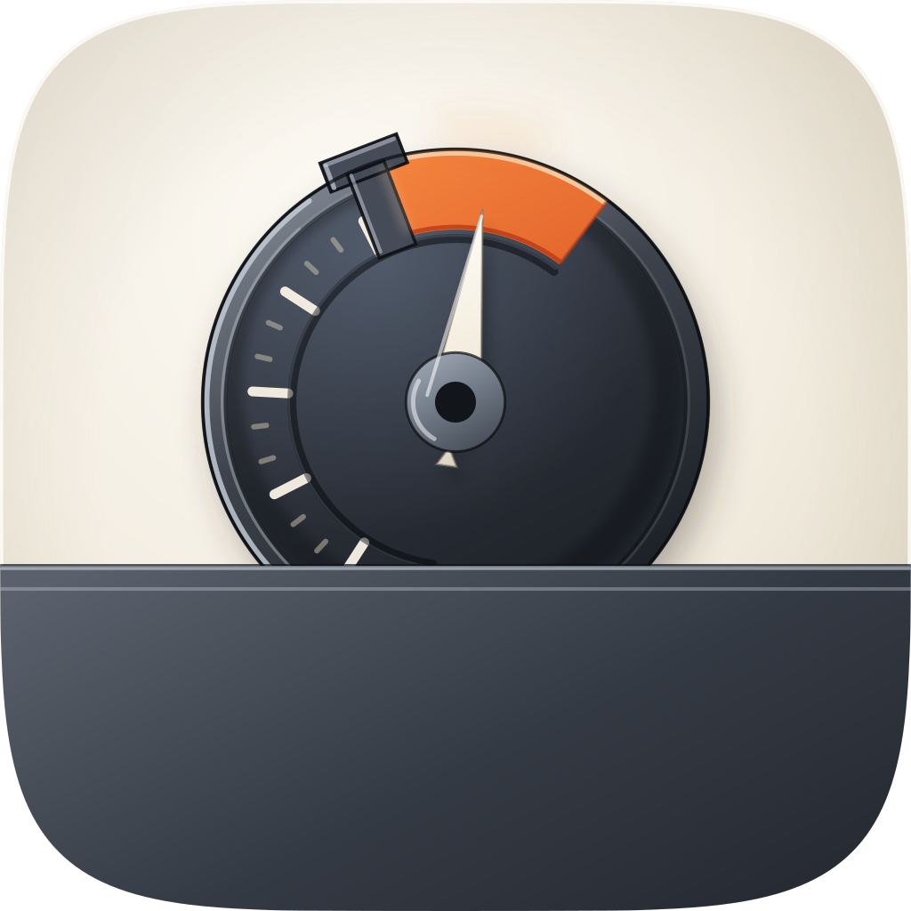 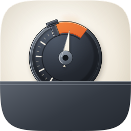 |
7 / 12 | The sunk dial — the same instrument half-buried in a graphite housing that bleeds off both edges, borrowing devices #17 and #18. Its 16px RMS is the highest of the six at 0.3216, and that number is the trap: the contrast is bought with 52.8% of the tile in dark mass rather than with a relation. #3 fails because the disc reads 1.18:1 against the housing, so filled black the two merge into one lump on a bar and the object stops being a dial. #4 follows at 16px. #2 fails on grid: the housing occupies the bottom third and the disc is pushed high, so nothing is optically centred. #8 fails at 96px, where the housing's own shadow and the disc's contact shadow do not resolve into one scene. #10 unverified. A real option honestly tried: it is the only take that says “the run continues past this window”, which is better-loop's idea rather than this one's, and that is the second reason to drop it. |
| C · icon-engineC-80617e.pngGPT Image 2, corpus-referenced (apple-23, apple-12, apple-10) — the material target | 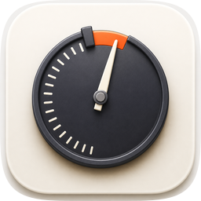 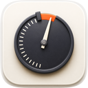 |
8 / 12 | The material engine, and it got the material right: satin graphite with a turned rim, cream graduations only on the flank, the vermilion band as a raised gel inlay, a real contact shadow on porcelain. It loses on the three things a flat raster cannot win. #1: it baked its own squircle and its own drop shadow, and masking that a second time leaves a visible double edge — measured as a value step from 224 to 246 across x ≈ 28 on the row through the centre of the masked 1024 render. #2: the dial is about 78% of the tile, well over the grammar's 55–65%. #10: one flat layer, so identity is a colour relationship and dies under Dark, Clear and Tinted. #4 is partial — the band and the stop survive 16px but the graduations dither. Salvaged into the master: the bezel's continuous inner-lip hairline. The master had that catch on the lit arc only, so the rim read as a highlight rather than as a turned part; this take and the Arrow take independently drew the rim as a complete pale annulus, and an unbroken line at a sixth of the lit arc's opacity was the whole fix. |
| B · icon-engineB-arrow-48d0c1.svgArrow 1.1 vector take, from the spec as brief | 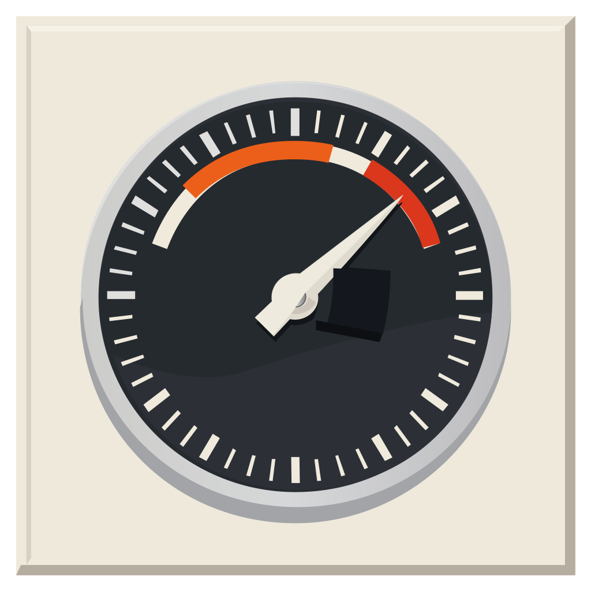 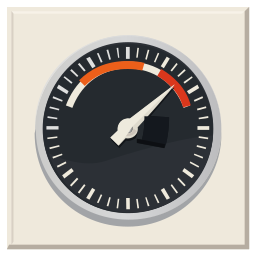 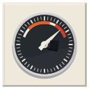 |
5 / 12 | An independent vector take, and it is the clearest evidence on the sheet for why the shipping construction is what it is. It put the vermilion band inside the tick ring as a floating arc — not on the object's silhouette edge — and at 16px that arc is a smear, which is exactly the failure the master was rebuilt to avoid. It also drew a full 360° graduation ring, which is a clock rather than an instrument with a travel, and left a stray black slab beside the hub where the stop block was asked for. #1 fails on a baked bevel frame with no cushion; #9 on the same frame, which is on the anti-checklist's legacy-era list; #3 and #11 on a generic speedometer plus an artifact; #5 because the frame is lit and the face is dead flat; #4 and #10 as above. Passes #2, #6, #7, #8 and #12. Salvaged: the continuous pale bezel annulus, the same finding as take C. |
| B2 · icon-engineB2-arrow-7676a8.svgArrow 1.1, the first call — the one that reported a timeout and wrote its file anyway | 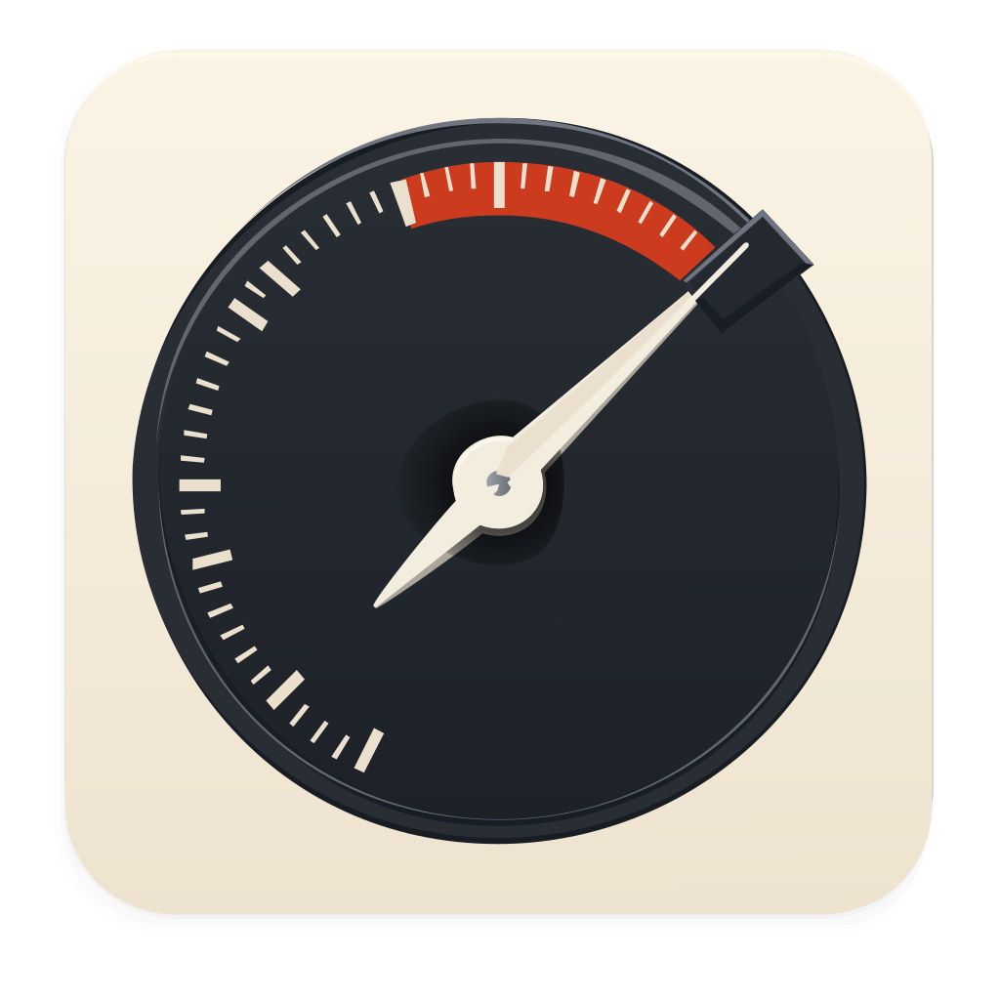 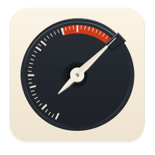 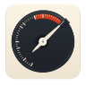 |
7 / 12 | The better of the two vector takes, and its failure is semantic, which is the most interesting thing on this sheet. It read the target band as a tachometer redline — a limit not to be exceeded — and put the needle hard against it from below with the stop outside the rim. That is the opposite of what the skill does: a redline is a ceiling you must stay under, a goal is a floor you must reach and hold. No palette or geometry note in the brief could have prevented it, and it is worth recording that a model handed “a band the reading has to be inside, with a stop at one end” produced the inverse meaning twice out of two vector calls. #1 fails: it baked its own rounded-corner mask at a smaller radius than the family superellipse, so masking it leaves a visible cream ring inside our corners. #4 fails — the arc sits inside the tick ring, exactly as take B put it, and at 16px it is a smear; its 16px RMS of 0.3568 is the highest number on the sheet and it is bought almost entirely by a near-black face. #9 fails on a flat pre-masked tile with no cushion; #10 on no layer plan; #11 on a stock tachometer. Passes #2, #3, #5, #6, #7, #8 and #12. Kept in because two independent Arrow calls agreeing on the losing accent placement is evidence, and because it is the reason to check an output directory before believing a reported timeout. |
prev · predecessor-dial.svgthe icon being replaced, and its generator predecessor-gen.py |
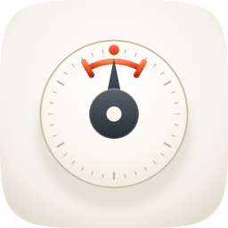     |
8 / 12 | The before row, carried at the score its retrospective sheet gave it on 19 August 2026. #7 is the severe one: the dial face sits at 1.05:1 against the tile beside it, so the primary form has no figure-ground of its own and is found only by its 1.35:1 rim. #4 follows — by the 32px source the tick ring and the bracket arc are gone and what is left is a pale disc with a dark hub and a warm speck, so the argument that makes it a goal does not survive. #11 is a judgment: a tick-ring dial with a needle is a step from a generic speedometer, and the one element that made it specific is the first to disappear. #10 was a hard fail on zero named layers until the morning of 19 August, when its generator was given the bg/mid/fg/highlight plan and both files began passing the structure gate pixel-identically; it is deducted here as unverified rather than absent, on the same standard as every other layered take. Its 16px RMS is 0.1142, rank 35 of 38 in the marketplace. |
icon.svg). It is the only take that clears the 10/12 bar, and it is the only one that fixes the defect this commission exists for without introducing a new one: the graphite face reads 12.34:1 against the tile against the predecessor's 1.05:1, and 16px RMS contrast goes from 0.1142 (rank 35 of 38) to 0.2929 (rank 3 of 38) against a family median of 0.2002 measured across all 38 marketplace icons today. Checks 1–4 are clean on the real renders, four named layers pass fidelity.py structure, and the accent is spent once, on the silhouette edge, at 2.52% of the tile. Known liabilities to revisit:
Emulation.setEmulatedMedia and does nothing with it.better-loop is 0.326 and nowhere near this tile, so the pair the two icons formed is properly broken. The nearest neighbours are shipyard 0.797, geminify 0.794 and proctor 0.790, and getting there took two swept constants rather than one design change: the object's diameter (scale) and its vertical position (cy). Diameter alone never cleared the bar at any setting between 52% and 62% of the tile — shrinking the disc moves the flag onto proctor's dark box (0.871 at 52%) instead of removing it, which is the structural convergence shelf_check.py's own docstring predicts. Both curves are in icon-notes.md. A sibling icon changing could put this back over the bar, and the honest reading is that several of these tiles are the same value recipe with different shapes in it.banner.png and banner-src.html still show the predecessor. Built 13 August against the pale dial and now wrong. Separately-owned banner debt, not fixed here; the numbers a banner pass needs are LIGHT_ANGLE_DEG = 118, LIGHT_AXIS ≈ (-0.47, +0.88) and the ACCENT* ramp, all in build_icon.py.icon.png (linearised, 0.2126R + 0.7152G + 0.0722B), sampled as 16×16px patches at polar coordinates off the dial centre, 6×6px on the graduations and the seat edge. 16px RMS contrast is the RMS of gamma-encoded relative luminance on a 16px Lanczos downsample over pixels with alpha > 0.5 — the same definition better-loop's commission published, so the family figures are comparable. These are readings of these renders, not estimates.
| Quantity | Measured | Against |
|---|---|---|
| graphite face vs the tile beside it | 12.34:1 | #7 wants 3:1 — passes; the predecessor was 1.05:1 |
| bezel vs the tile below it | 12.59:1 | the object's own boundary |
| lit bezel vs the tile beside it | 3.76:1 | the rim's up-light arc, its weakest boundary |
| target band vs the tile | 2.44:1 | under 3:1 — a stated liability |
| target band vs the graphite face | 2.71:1 | under 3:1; apple-12's accent is 2.29:1 against its body |
| the band's seat edge vs the tile | 3.36:1 | the boundary the eye uses instead |
| pawl boss vs the tile | 7.70:1 | the silhouette break |
| needle vs the face it stands on | 7.19:1 | the second read after the disc |
| major graduation vs the face | 12.20:1 | value-separated, as apple-23 does it |
| minor graduation vs the face | 3.08:1 | texture; first to dither |
| bearing collar vs the face | 3.49:1 | |
16px RMS contrast, icon-256.png | 0.2929 | rank 3 of 38; family median 0.2002; the predecessor 0.1142 at rank 35 |
| grayscale spread, alpha-masked p2/p50/p98 | 0.117 / 0.876 / 0.962 | the predecessor was 0.285 / 0.955 / 0.988 |
| warm accent share, one contiguous piece | 2.52% | better-loop's discipline figure is 2.41% |
| object width | 614px = 60.0% of tile | the grammar's focal band is 55–65% |
| side margins | 205px both sides, 147 top / 247 bottom | symmetric |
| dark mass share of tile | 24.0% | a3, the losing take, is 52.8% |
| corner alpha, four extremes | 0, 0, 0, 0 | #1 mask discipline — passes |
| paths / gradients / filters / named layers | 24 / 12 / 4 / 4, 17,650 bytes | fidelity.py structure PASS; well inside the envelope |
| nearest shelf neighbour at 16px | shipyard 0.797 | better-loop is 0.326 — the pair is broken |
icon-directions.md (mask discipline, grid, silhouette, 16px identity, single light model, palette economy, figure-ground, depth coherence, era coherence, variant robustness, personality, no-text) — checks 1–4 non-negotiable, delivery bar ≥10/12. One standard applied to every take on this sheet: #10 is deducted wherever variant robustness has not been rendered in the six appearance variants, which is every take here, because the browser engine available accepts Emulation.setEmulatedMedia and leaves prefers-color-scheme untouched. Takes B and C would fail it outright in any case, having no layer plan at all. Raster takes are audited on their squircle-masked 1024 versions. Renders produced by python3 audit_sheet.py render plugins/better-goal/assets --take a1=icon.svg:svg --take a2=… --take C=icon-engineC-80617e.png:raster-mask at 1024 / 256 / 128 / 96 / 64 / 32 sources, recorded in audit-renders/render-manifest.json; verified by its check subcommand.apple-23 Safari, apple-12 Calculator, apple-10 ChatGPT). The first Arrow call reported a timeout to its caller and wrote its SVG anyway, which is why there are two vector takes here: B2 was found on disk afterwards and is scored rather than deleted. Check the output directory before believing a reported timeout. icon.svg is byte-reproducible from build_icon.py --variant a1, checked with cmp after the last edit to that script, so the master on disk and the generator cannot have drifted apart. No fidelity loop was run: the raster take did not win the material read, and the two constructions it and the vector take agreed on were salvaged directly rather than converged upon.